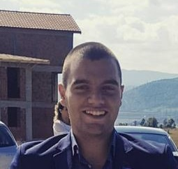

O meni
 Zovem se Jelovac Mladen. Rođen sam 06.09.1991.godine u Pljevljima. Završio sam Srednju stručnu školu u Pljevljima. Nakon toga upisujem Elektrotehnički fakultet Podgorica, odsjek Primijenjeno računarstvo. Sebe bih okarakterisao kao disciplinovanu osobu, voljnu za rad i učenje. Moj životni moto je: "Čovjek se uči dok je živ". Ja sam komunikativan mlad čovjek sa izuzetnim komunikacionim sposobnostima i bogatim riječnikom i spreman za rad u timskom okruženju. Vrijedan i precizan, kao i posvećen poslu. Voljan i motivisan da kroz rad u vašoj firmi pomognem kako vama, tako i da usavršim i poboljšam svoje radne sposobnosti. U budućnosti vidim sebe kao dio stabilnog i jakog tima spremnog da uz konstantan napredak obezbijedi kontinualan rast firme. Ukoliko je potrebno, spreman sam i za dodatnu kvalifikaciju u cilju što boljeg obavljanja posla.
-
Poznavanje stranih jezika:
- Engleski jezik- odlično znanje
- Francuski jezik- osnovno znanje
- Njemački jezik- osnovno znanje
Obrazovanje

Elektrotehnički fakultet Podgorica, odsjek Primijenjeno računarstvo (2010-2014)
- Bachelor studije Primijenjenog računarstva (10.09.2010- 09.07.2013), prosječna ocjena studija "B"(9.44)
- Postdiplomske studije Primijenjenog računarstva (10.09.2013-08.07.2014), prosječna ocjena "B"(8.87)
Poznavanje programskih jezika
Java

- Core
- Advanced
- JavaFX
Front-end

- Html
- CSS ( CSS3, Bootstrap 3, Bootstrap 4)
- Java script ( Vanilla JS, AJAX, JSON), JQuery